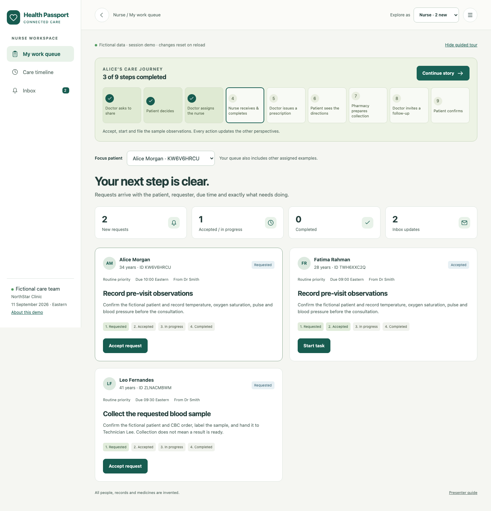
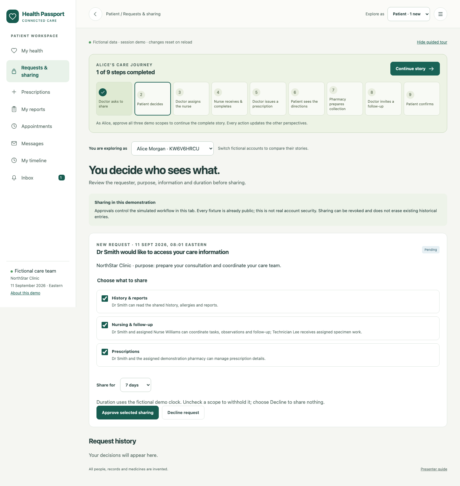
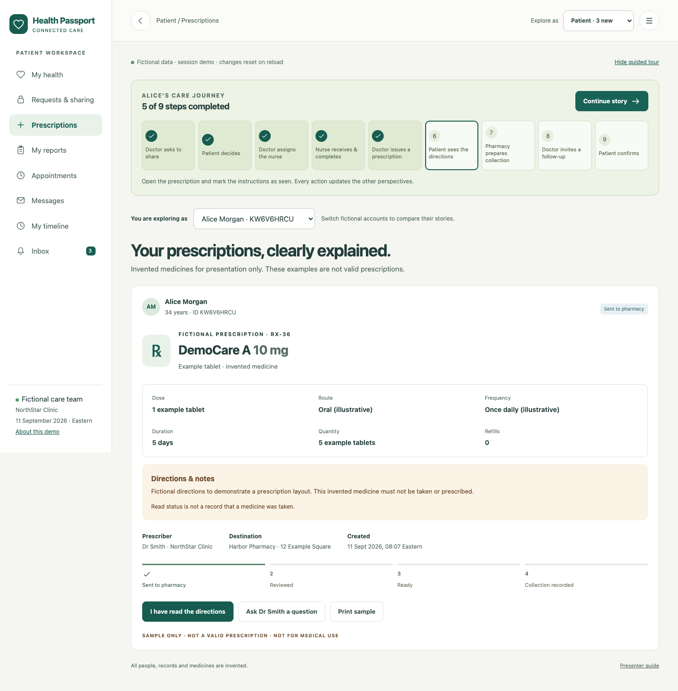

One story · five perspectives · about five minutes
Show how care
stays connected.
Follow Alice from her first sharing request to a confirmed follow-up. Every action has a visible recipient and a clear next step.
Start the demonstration →Begin with Alice.
Open the demo and select Start guided story. After each action, select Continue story to move to the next perspective. The guide moves you; you still perform each action.
Keep one tab open.
All five views share this tab’s fictional state. Reloading, opening another tab or choosing Reset demo starts fresh. No account or installation is needed.
The nine-step care journey
-
Doctor
Ask for access
Select Request patient access. Alice receives the request in her inbox and sharing screen.
-
Patient
Choose what to share
Review the purpose, three scopes and duration. Select Approve selected sharing. Keep all three scopes for the full story.
-
Doctor
Send work to the nurse
Create the vitals request. Review the assignee, priority and due time, then Send request to nurse.
-
Nurse
Receive, accept, complete
On Alice’s card, Accept request → Start task → Review & file result. Confirm the sample. Doctor and patient receive the update.
-
Doctor
Review the prescription
Select Review new prescription, read the invented example, check the review box and send it to Alice and Harbor Pharmacy.
-
Patient
Understand the directions
Show dose, route, frequency, duration and quantity. Select I have read the directions. Reading does not record a dose.
-
Pharmacy
Make collection visible
Review the prescription, mark it ready and record collection. Confirm each step; the patient sees the progress.
-
Doctor
Invite a follow-up
Choose a proposed time and select Invite patient to follow-up. It stays pending until Alice responds.
-
Patient
Close the loop
Select Confirm appointment. The doctor sees the confirmation. Open Alice’s timeline to review the whole story.
The handoff
The nurse sees exactly what comes next.

The patient’s experience
Every request has a purpose and a choice.

The prescription
Directions, ownership and progress in one place.

Go deeper when the audience asks.
Follow a laboratory report
Doctor requests a specimen. Nurse accepts, starts and files collection. Laboratory processes and releases the sample. Doctor records review; Alice sees the report and its status.
Show a question and reply
Patient → Messages → Send example question. Switch to Doctor → Messages → Send example reply. Return to Alice’s inbox to show the response.
Demonstrate patient control
Decline, limit or revoke sharing. Future simulated staff actions need the relevant scope. To resume the full tour, send a new request and approve all three scopes.
Try a different appointment
Alice can ask for another time. The doctor selects the other example slot and sends a new invitation. A pending or confirmed slot cannot be double-booked.
Ready for the next presentation?
Top-right menu → Restart with fresh examples → Reset demo. The small Back button returns to the previous screen; the logo returns home. On a phone, swipe the navigation strip to reach more sections.
This GitHub Pages site has no real login, backend, persistent records or external messages. Every fixture is public. Consent controls illustrate workflow, not real account security. The separate full web and Expo applications run locally with the Java API.